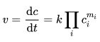
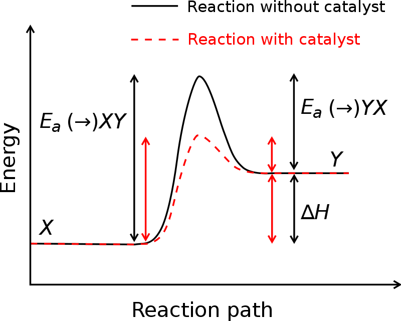

Hi! My name is Aisbel. This is a Work in Progress about Chemical Kinetics.
Chemical kinetics, also known as reaction kinetics, is the branch of physical chemistry that is concerned with understanding the rates of chemical reactions. It is to be contrasted with thermodynamics, which deals with the direction in which a process occurs but in itself tells nothing about its rate.
Chemical kinetics includes:
In 1864, Peter Waage and Cato Guldberg pioneered the development of chemical kinetics by formulating the law of mass action, which states that the speed of a chemical reaction is proportional to the quantity of the reacting substances.
The reaction rate varies depending upon what substances are reacting. Acid/base reactions, the formation of salts, and ion exchange are usually fast reactions. When covalent bond formation takes place between the molecules and when large molecules are formed, the reactions tend to be slower. The nature and strength of bonds in reactant molecules greatly influence the rate of their transformation into products.
The physical state (solid, liquid, or gas) of a reactant is also an important factor of the rate of change. When reactants are in the same phase, as in aqueous solution, thermal motion brings them into contact. However, when they are in separate phases, the reaction is limited to the interface between the reactants. Reaction can occur only at their area of contact; in the case of a liquid and a gas, at the surface of the liquid.
Vigorous shaking and stirring may be needed to bring the reaction to completion. This means that the more finely divided a solid or liquid reactant the greater its surface area per unit volume and the more contact it with the other reactant, thus the faster the reaction.
To make an analogy, for example, when one starts a fire, one uses wood chips and small branches — one does not start with large logs right away. In organic chemistry, on water reactions are the exception to the rule that homogeneous reactions take place faster than heterogeneous reactions ( are those reactions in which solute and solvent not mix properly).
In a solid, only those particles that are at the surface can be involved in a reaction. Crushing a solid into smaller parts means that more particles are present at the surface, and the frequency of collisions between these and reactant particles increases, and so reaction occurs more rapidly. 
For example, Sherbet (powder) is a mixture of very fine powder of malic acid (a weak organic acid) and sodium hydrogen carbonate. On contact with the saliva in the mouth, these chemicals quickly dissolve and react, releasing carbon dioxide and providing for the fizzy sensation.
Also, fireworks manufacturers modify the surface area of solid reactants to control the rate at which the fuels in fireworks are oxidised, using this to create diverse effects.
For example, finely divided aluminium confined in a shell explodes violently. If larger pieces of aluminium are used, the reaction is slower and sparks are seen as pieces of burning metal are ejected.
The reactions are due to collisions of reactant species. The frequency with which the molecules or ions collide depends upon their concentrations. The more crowded the molecules are, the more likely they are to collide and react with one another. Thus, an increase in the concentrations of the reactants will usually result in the corresponding increase in the reaction rate, while a decrease in the concentrations will usually have a reverse effect. For example, combustion will occur more rapidly in pure oxygen than in air (21% oxygen).
The rate equation shows the detailed dependence of the reaction rate on the concentrations of reactants and other species present. The mathematical forms depend on the reaction mechanism. The actual rate equation for a given reaction is determined experimentally and provides information about the reaction mechanism.
Temperature usually has a major effect on the rate of a chemical reaction. Molecules at a higher temperature have more thermal energy. Although collision frequency is greater at higher temperatures, this alone contributes only a very small proportion to the increase in rate of reaction. Much more important is the fact that the proportion of reactant molecules with sufficient energy to react (energy greater than activation energy: E > Ea) is significantly higher and is explained in detail by the Maxwell–Boltzmann distribution of molecular energies.
The effect of temperature on the rate of chemical reaction:
Temperature usually has a major effect on the rate of a chemical reaction. Molecules at a higher temperature have more thermal energy. Although collision frequency is greater at higher temperatures, this alone contributes only a very small proportion to the increase in rate of reaction. Much more important is the fact that the proportion of reactant molecules with sufficient energy to react (energy greater than activation energy: E > Ea) is significantly higher and is explained in detail by the Maxwell–Boltzmann distribution of molecular energies.
The effect of temperature on the rate of chemical reaction:
